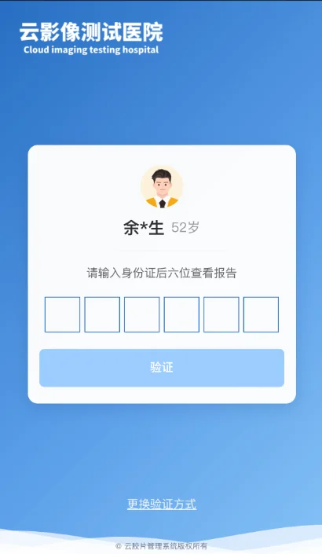
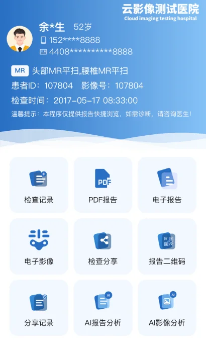
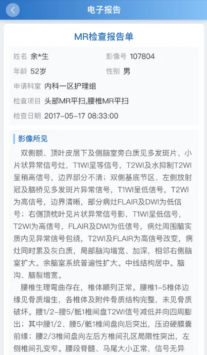
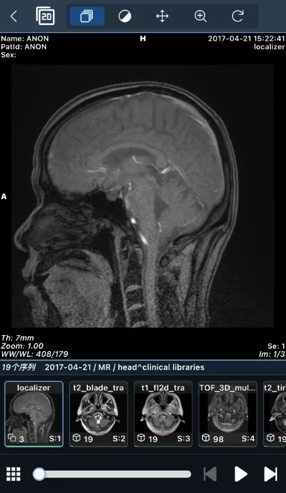
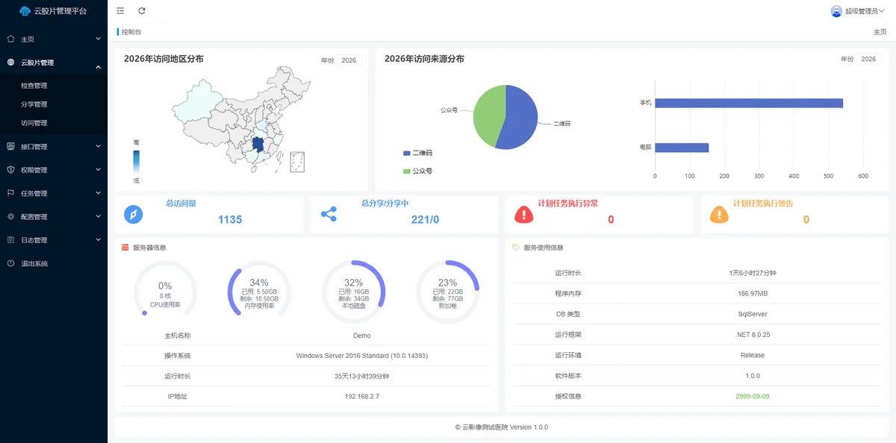
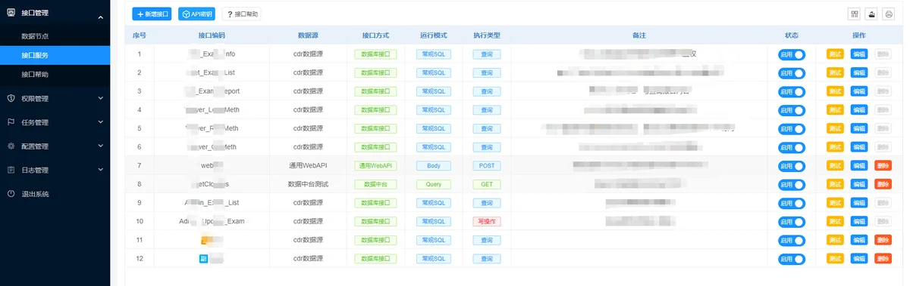

云胶片是面向医疗机构的数字胶片与检查服务云平台。患者可通过手机、微信公众号或扫码，安全查看检查报告与医学影像；医院在统一后台完成配置、运维与统计，并与现有 RIS/PACS 对接，无需替换院内核心业务系统。
| 角色 | 常见痛点 | 云胶片价值 |
|---|---|---|
| 患者 | 排队取片、胶片易丢、复查带盘不便 | 线上查看报告与影像，减少往返 |
| 临床科室 | 患者频繁咨询报告是否已出 | 支持患者自助查询，减轻窗口压力 |
| 影像科 / 信息科 | 系统多、对接成本高 | 可配置对接，按需接入院内数据源 |
| 医院管理 | 使用情况难统计、分享难管控 | 提供访问记录、分享管理与审计能力 |






系统提供身份验证、限时链接、水印、脱敏、权限控制与访问审计能力，可配合医院对等保、隐私保护、知情同意等合规要求落地实施。
| 适用对象 | 放射科、影像中心、体检机构与医院信息科团队 |
|---|---|
| 终端形式 | 手机浏览器 / 公众号 / 扫码入口 / 管理后台 |
| 部署方式 | 云端部署 / 私有部署 / 容器化部署 |